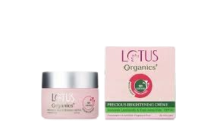
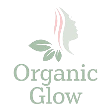
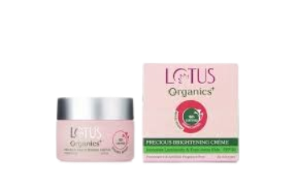
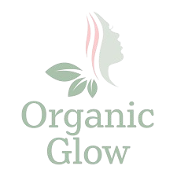

Organic Glow Insights
Portada
Estudio de Mercado
Realizado por: Yoiber Smith Gutiérrez Romaña
Acompañado por: Ana Isabel Ricardo Belasques
Colegio: Colegio Carmelo Conuraba
Área: Ética
Fecha: 19 de julio
Introducción
El propósito de este estudio de mercado es analizar el comportamiento y las preferencias de los consumidores en el mercado de productos orgánicos para el cuidado de la piel. A través de métodos de investigación cuantitativa y cualitativa, buscamos entender las tendencias del mercado, identificar a nuestro público objetivo, analizar a la competencia y obtener información valiosa para mejorar nuestra oferta de productos y estrategias de marketing.
El mercado de productos orgánicos para el cuidado de la piel ha experimentado un crecimiento significativo en los últimos años debido a la creciente conciencia sobre los beneficios de los ingredientes naturales y la sostenibilidad. Este estudio proporciona una visión detallada de este mercado dinámico y en expansión.
Naturaleza del Mercado
La industria de los productos orgánicos para el cuidado de la piel ha crecido significativamente en los últimos años. Los consumidores son cada vez más conscientes de los ingredientes naturales y sus beneficios para la piel, lo que ha impulsado la demanda de productos que no contienen químicos dañinos.
El mercado global de productos orgánicos para el cuidado de la piel está valorado en más de 10 mil millones de dólares y se espera que crezca a una tasa anual del 8% durante los próximos cinco años. Este crecimiento está impulsado por la creciente preferencia por productos naturales, la preocupación por el medio ambiente y el aumento de la disponibilidad de productos orgánicos.
Las principales tendencias del mercado incluyen el uso de ingredientes naturales como el aceite de coco, el aloe vera y el té verde, así como la creciente popularidad de los productos veganos y libres de crueldad animal. Además, los consumidores buscan cada vez más productos con envases sostenibles y reciclables.
Perfil del Público Objetivo
Nuestro público objetivo principal son mujeres de entre 25 y 45 años que valoran los productos naturales y están dispuestas a pagar un precio premium por productos de alta calidad. Estas consumidoras suelen tener un nivel educativo alto y están informadas sobre las tendencias en el cuidado de la piel.
Además, nuestro público objetivo incluye mujeres que buscan productos específicos para problemas de piel como el acné, la piel sensible y el envejecimiento. Estas consumidoras prefieren productos con ingredientes orgánicos que no irriten su piel y que ayuden a mejorar su apariencia y salud.
Un factor clave para estas consumidoras es la transparencia y autenticidad de las marcas. Valoran la información clara sobre los ingredientes y los procesos de producción, y prefieren marcas que sean éticas y sostenibles.
Análisis de la Competencia
Los principales competidores en el mercado incluyen marcas como Kiehl's, The Body Shop y Lush. Estas marcas tienen una fuerte presencia en el mercado y ofrecen una amplia gama de productos orgánicos para el cuidado de la piel. Sin embargo, nuestra propuesta de valor se centra en la pureza de los ingredientes y la sostenibilidad de nuestros envases.
Kiehl's es conocida por sus fórmulas naturales y efectivas, y tiene una gran base de clientes leales. The Body Shop se destaca por su compromiso con el comercio justo y los productos libres de crueldad animal. Lush, por su parte, es famosa por sus productos frescos y hechos a mano, así como por su enfoque en la sostenibilidad y el activismo.
Para diferenciar nuestra marca, debemos enfocarnos en ofrecer productos con ingredientes de la más alta calidad, con certificaciones orgánicas y sostenibles. También es crucial destacar nuestro compromiso con la transparencia y la ética, así como proporcionar una experiencia de compra excepcional y personalizada.
Preguntas de Investigación y Resultados
Realizamos una encuesta a 500 mujeres dentro de nuestro público objetivo para entender mejor sus preferencias y comportamientos de compra. Descubrimos que el 70% de las encuestadas prefieren productos con ingredientes completamente naturales, y el 60% están dispuestas a pagar más por envases ecológicos.
Otras preguntas clave de nuestra investigación incluyeron la frecuencia de compra de productos orgánicos para el cuidado de la piel, los factores más importantes en la decisión de compra y las marcas que más utilizan. Los resultados nos han proporcionado información valiosa para mejorar nuestra oferta y estrategias de marketing.
En general, nuestra investigación muestra una clara tendencia hacia productos más naturales y sostenibles, y una creciente demanda de transparencia y autenticidad por parte de las marcas.
Conclusiones
El mercado de productos orgánicos para el cuidado de la piel presenta una gran oportunidad para nuestra marca. Los consumidores están cada vez más conscientes de los beneficios de los ingredientes naturales y la sostenibilidad, lo que impulsa la demanda de productos orgánicos y éticos.
Para tener éxito en este mercado, debemos enfocarnos en la calidad y pureza de nuestros ingredientes, la sostenibilidad de nuestros envases y la transparencia en nuestras prácticas comerciales. Además, debemos ofrecer una experiencia de compra excepcional y personalizada para construir una base de clientes leales y satisfechos.
En resumen, el estudio de mercado nos ha proporcionado una comprensión profunda de las tendencias y preferencias de los consumidores, y nos ha ayudado a identificar las áreas clave en las que debemos enfocarnos para diferenciar nuestra marca y tener éxito en el mercado de productos orgánicos para el cuidado de la piel.
Contacto
Para obtener más información sobre este estudio de mercado o para cualquier consulta, no dude en ponerse en contacto con nosotros:
Nombre: Yoiber Smith Gutiérrez Romaña
Correo Electrónico: yoiber.smith@example.com
Teléfono: +57 123 456 7890
Photo Gallery
.png) 


